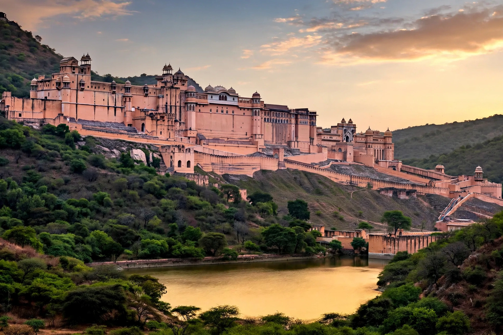

| Rajput architecture | |
|---|---|
 Amber Fort, a classic of Rajput palace-fort design | |
| Region | Rajasthan and neighbouring areas, India |
| Period | c. 8th century – present |
| Key examples | Chittorgarh, Amber, Mehrangarh, Jaisalmer |
Rajput architecture is the architectural tradition of the Rajput kingdoms of northwestern India, especially in present-day Rajasthan. It is best known for its massive hill forts, ornate palaces, stepwells, cenotaphs and temples, blending Hindu and Jain building traditions with, from the 16th century onward, strong influences from Mughal architecture.
The great Rajput forts were typically built atop steep hills or ridges and ringed by long crenellated walls following the terrain. Six of them — Chittorgarh, Kumbhalgarh, Ranthambore, Gagron, Amber and Jaisalmer — are inscribed together on the UNESCO World Heritage List as the Hill Forts of Rajasthan. Kumbhalgarh's perimeter wall, over 36 km long, is among the longest in the world. Forts contained palaces, temples, reservoirs and granaries so they could withstand long sieges.
Rajput palaces are characterised by carved sandstone and marble facades, projecting balconies (jharokhas), domed pavilions (chhatris), courtyards, and richly painted interiors. Mirror-work chambers such as the Sheesh Mahal, frescoed halls at Bundi and Kota, and the lake palaces of Udaipur illustrate the decorative richness of the style. Separate zenana (women's) quarters, often screened by pierced stone jali work, were a standard feature; the Hawa Mahal of Jaipur, built by Sawai Pratap Singh, is essentially a grand screened facade for the zenana.
In arid Rajasthan, stepwells (baolis) and large artificial lakes were both practical necessities and major works of architecture. Ornate stepwells such as Chand Baori at Abhaneri descend many storeys in geometric flights of steps.
Royal cremation grounds feature clusters of chhatri cenotaphs, as at Bada Bagh near Jaisalmer and Ahar near Udaipur. Rajput patrons also built Hindu and Jain temples in the Nagara style, including the white-marble Dilwara Jain temples at Mount Abu.